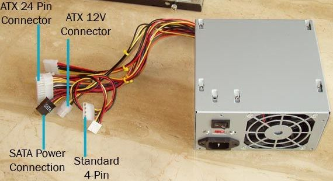
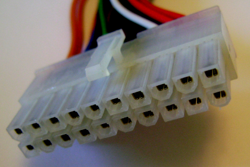
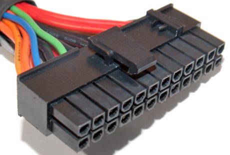
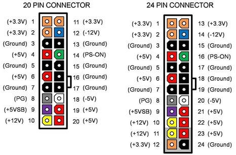
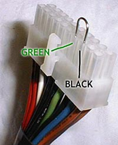
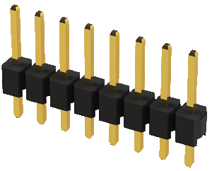
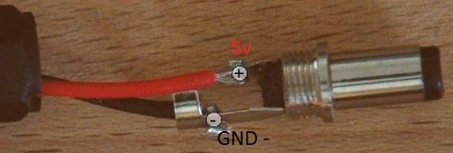

Источник питания из блока питания ATX компьютера
Старый блок питания от компьютера можно приспособить в БП с большой силой тока. Также он дает стандартное напряжение 3,3 В, 5 В и 12 В для питания практически любых электронных устройств.

Рис. 1 - Блок питания ATX
Необходимые материалы:
- Компьютерный блок питания.
- Паяльник и припой.
- BLS штырьки.
- DC разъем 2.1 мм .
Подключение
Основной разъём блока питания – ATX 20 pin (рис. 2). Цвета на схеме соответствуют цветам проводов на разъеме. На всех проводах одинакового цвета одинаковое напряжение, т. е. на всех красных проводах +5 В, все черные провода GND и так далее. Наиболее полезными для нас проводами являются +5 В (красные провода), +12 В (желтые провода) и GND (черные провода). На линиях +5 В и +12 В ток обычно достаточен для наших нужд.



Рис. 2 - Внешний вид и распиновка разъемов ATX 20-pin и ATX 24-pin
На линии +3,3 В ток также достаточен для нас, но это напряжение редко используется. +5 VSB (+5 постоянного тока), -12 В и -5 В как правило имеют очень низкий ток и редко используются.
Контакт 14 (зеленый провод) отвечает за включение/выключение. Для включения питания необходимо соединить зеленый провод с GND, то есть соединить 14 и 13 контакты перемычкой.
Большинство блоков питания для работы требуют нагрузку на один или несколько выходов.
На других меньших разъёмах питания используется та же цветовая кодировка. Например, разъем с желтым, красным и двумя черными проводами имеет +12 В (желтый провод), +5 В (красный провод) и два GND.
Чтобы питать устройство от 12 В, необходимо подключить желтый провод к "+" устройства, а черный к GND.
Чтобы питать устройство от 5 В, подключите красный провод к "+", а черный провод к GND.

Рис. 3 - Перемычка для соединения гнезда PowerOn с GND
Необходимо замкнуть зеленый провод с любым из проводов GND (черный провод) (рис. 3). Для этого можно использовать кусок проволоки или обрезать провода и спаять их вместе.
Припаяйте BLS штырьки (рис. 4) к +12 В (желтый провод), +5 В (красный провод), +3,3 В (оранжевый провод), GND (черный провод)

Рис. 4 - BLS штырьки
Припаяйте гнездо для питания электронных устройств: провод 5 В припаяйте к контакту 5 В, GND - к GND (рис. 5).

Рис. 5 - Распайка гнезда питания
Источники
cxem.net - Блок питания для Arduino из ATX
instructables.com - Power Supply Unit for Arduino Power and Breadboard